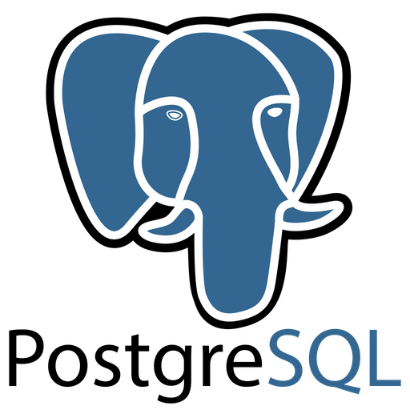
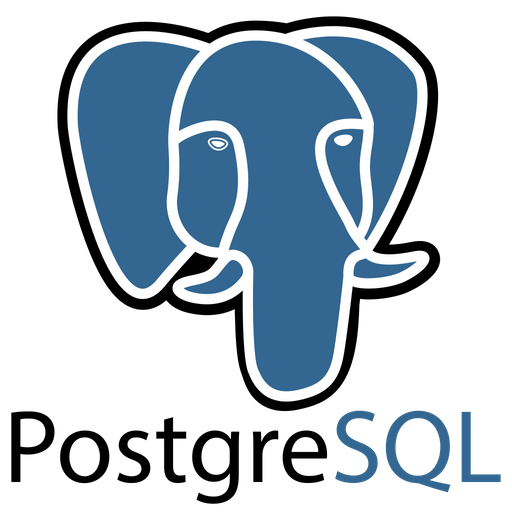

Hello, World!
My name is Daniel Christy, and I am currently a dedicated Software Developer Apprentice. With a strong background in customer service and management, I've developed a keen understanding of user needs and experiences.
My journey into software development is driven by a passion for leveraging technology to create inclusive and accessible solutions. I aspire to build applications and systems that prioritize user experience and cater to diverse audiences.
When I’m not working, coding, or researching, you can find me bowling, playing video games, or immersing myself in tabletop RPGs. I enjoy crafting intricate worlds and narratives through writing and worldbuilding, which inspires me to infuse creativity and a user-centered approach into my projects.
Skills
During my apprenticeship, I have been developing skills in full-stack development and datbase management utilizing various languages and frameworks, including Python, Django, HTML, CSS, JavaScript, Java, SQL (PostgreSQL), and Spring. I have also gained experience in Visual Stodi Code, IntelliJ, and PgAdmin development tools.
Alongside these technical skills, I have also been applying project management methodologies to ensure successful project execution by fostering collaboration and clear communication within teams.
Backend Development

 



Frontend Development


Development Tools


Projects
Task Tycoon
TaskTycoon is a group project completed using Python. Using a command line interface, it allows admins and employees to monitor important work elements such as time-keeping and task monitoring.
View Project in GitHubBook Club Management System
.png)
This Book Club Management System command line application allows users to view and update lists of fiction and nonfiction books. This was completed as an independent project.
View Project in GitHubThe G.O.A.T.

The G.O.A.T. is an introductory HTML/CSS project in which we were tasked with building a website for who we consider to be the Greatest of All Time.
View Project in GitHubContact
Phone: (601) 842-7016
Email: daaronchristy@gmail.com